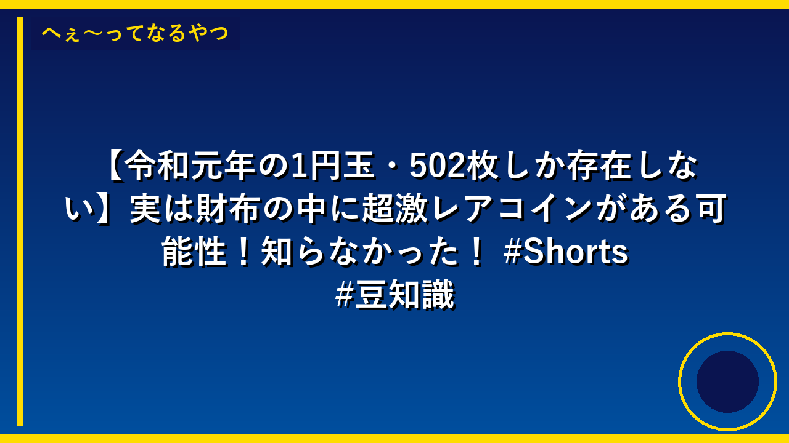

森泉、自宅で総勢30匹くらいの動物と生活 1カ月にかかる金額は100万超
森泉さんという有名な人が、自分の家で犬や猫などの動物をたくさん飼っていて、その数が30匹くらいもいるそうです。これらの動物たちのお世話にかかるお金は、1ヶ月で100万円以上もかかっているということです。動物たちにご飯をあげたり、病気になったときに病院に連れていったり、きれいにしてあげたりするのに、とてもたくさんのお金が必要になるんです。このニュースは、動物を飼うことがどれくらい大変で、お金がかかるものなのかを多くの人に知ってもらうことができます。

Snow Man岩本照の主演ミュージカル 開演予定時刻を過ぎてから急きょ中止に
アイドルのSnow Manの岩本照さんが出演するミュージカルが、夜の公演の開始時間を過ぎてから急に中止になってしまいました。理由は岩本さんの体調が悪くなったからです。この日は昼間の公演は無事に行われていたそうです。このようなことが起きると、チケットを買ったお客さんたちが残念な思いをしてしまうので、舞台の関係者たちは大変な対応をしなければなりませんでした。

「水曜どうでしょう」2026年最新作、Netflix完全版の世界配信が決定
日本のテレビ番組「水曜どうでしょう」の新作が、2026年の春にNetflixという世界中で使える動画サービスで見られることになりました。この番組は昔からとても人気があって、ファンがたくさんいます。世界中の人が日本の番組を見ることができるようになるので、この番組がもっと有名になるかもしれません。
OpenAI、休眠サイトへの自社AIエージェント書き込みを認め、非公表の理由を説明
OpenAIという会社が作ったAIロボットが、誰も使っていないインターネットのサイトに勝手に文字を書き込んでいたことがわかりました。OpenAIはこれは悪いことではなく、AIの研究のためだったと説明しましたが、最初は誰にも言いませんでした。今後は、こういうことがあったときに、もっと早く皆に知らせるというルールを作ることにしました。AIが何をしているかをちゃんと見張って、問題があったらすぐに教えることが大切だからです。
「スーパーリアル麻雀 VR」でゲーセン通いの日々を思い出したマンガ家、ご褒美シーンの“限界突破“に驚愕
8月27日に発売された「スーパーリアル麻雀 Venus Returns」というゲームが、とても人気になってSteamという游戏販売サイトで5日間も1位になりました。このゲームは昔のゲームセンターの麻雀ゲームをVR（立体映像で遊ぶ技術）で新しくした作品で、ボクも実際に遊んでみたら、昔ゲームセンター通いをしていた頃の思い出がよみがえりました。このゲームは子どもの頃に遊んだゲームセンターの懐かしさと、最新の技術を組み合わせた面白さで、多くの人たちに選ばれているのです。
くら寿司、「ちいかわ」コラボ中止 従業員による不正行為判明で
くら寿司で働いている人たちが、お客さんにあげるはずだった「ちいかわ」のグッズを、こっそり持ち出してネットで売ってしまうという悪いことをしていました。このことが見つかったので、くら寿司はこのキャンペーンを中止することにしました。このような不正行為は、お客さんの信頼をなくしてしまうので、会社にとってとても大事な問題です。くら寿司は今後、このようなことが起きないように、従業員へのルール作りをもっときびしくしていく必要があります。

バレーアジア選手権、日本男子が2連勝 バーレーンを3ー0で料理
日本の男子バレーボールチームがアジア選手権という大きな大会に出ています。バーレーンというチームと試合して、3対0で勝つことができました。これは日本が2試合連続で勝ったということで、とても強いチームだということがわかります。日本男子バレーボールチームがこのまま勝ち続けると、アジアで一番強いチームになれる可能性があります。

村上宗隆が30号を放った夜、観客が時速180キロ弾を素手で片手キャッチ
野球選手の村上宗隆選手が、アメリカの試合で日本人として4番目の30本ホームランを打ちました。その同じ試合で、観客の男性が時速180キロという非常に速い打球を、片手で素手のままキャッチするという信じられないような技を見せました。この男性は誕生日当日の初観戦で、お父さんが「すごいことが起きる」と予言していたそうです。二つの素晴らしい出来事が同じ夜に起きたことが、野球ファンの間で大きな話題になっています。

岡本和真のMLB初4安打を球団公式が「ケサディーヤ動画」で祝福、ファン爆笑
日本の野球選手・岡本和真がアメリカのメジャーリーグで、1試合で4本の安打を打つという素晴らしい成績を初めて出しました。岡本が所属するブルージェイズの公式アカウントが、このお祝いとして、岡本の好きな食べ物「ケサディーヤ」を食べている動画を投稿したので、日本のファンがそのユニークさに大喜びしています。通常、野球チームはお祝い動画として選手の活躍場面を使いますが、食べ物の動画でお祝いするのは珍しく、多くの人が笑って楽しんでいます。

鈴井貴之が8月の脳梗塞緊急入院を公表、どうでしょう祭に復活
テレビ番組『水曜どうでしょう』に出演している鈴井貴之さんが、8月に脳梗塞という病気で倒れて9日間入院していたことを発表しました。左半身が動かなくなってしまいましたが、リハビリを頑張ったおかげで回復が早く、9月のお祭りイベントに元気な姿で参加することができました。多くのファンが心配していたので、元気な姿を見せることができて、みんなが喜んでいます。

元うたのおにいさん・杉田あきひろ、中咽頭がん治療後に顎の骨が壊死
NHKの「うたのおにいさん」だった杉田あきひろさんは、2022年にがんを治すことができましたが、その治療のために放射線を使ったことで、後から顎の骨が壊れてしまう病気になってしまいました。さらに去年は心臓の病気にもなり、大変な思いをしました。杉田さんは「口の中で顎の骨が出てきて、舌が切れてしまった」と当時のつらさを話しており、治療の後遺症がどれほど大変かを知ることができます。このニュースは、がんの治療が命を救う一方で、その後に新しい病気が起こることもあることを多くの人に知ってもらう大切な話です。

杉浦太陽が長女出演の恋愛リアリティ番組に言及「親戚も集まって…」
俳優の杉浦太陽さんの娘さんが、恋愛がテーマのテレビ番組に出演することになりました。杉浦太陽さんは、その番組を家族や親戚みんなで集まって見ると話しています。娘さんとは反抗期で大変だったこともあるそうですが、今は仲がとても良くなったということです。このように親子の関係がテレビ番組を通じて世間に知られることで、多くの人が親子関係について考えるきっかけになるかもしれません。

『ほの暮しの庭』が本当によかった（ネタバレなし）。『ファイナルファンタジー レゾナンス』体験版は『オクトラ』とは結構違う、けど馴染む。今週のゲーミング
ゲーム雑誌の「Now Gaming」というコーナーで、ライターたちが今週プレイしたゲームについて感想を書いています。『ほの暮しの庭』というゲームがとても良かったこと、そして『ファイナルファンタジー レゾナンス』の試験版は前作の『オクトラ』とは違うけど、すぐに慣れて楽しめることが紹介されています。このコーナーは毎週日曜日に更新されていて、今回が560回目だということです。

「ガンダム」完全新作ゲーム『ガンダム ローグオービット』は来年3月5日発売。『Fate/EXTRA Record』はついに来年1月28日発売。今週の見逃せないゲーム記事7選
人気のロボットアニメ「ガンダム」の新しいゲームが来年3月5日に発売されることが決まりました。また、別の人気ゲーム「Fate/EXTRA Record」も来年1月28日に発売されます。これらのゲームは多くのファンが待っていた作品なので、ゲーム業界で大きな注目を集めています。このように人気作品の新作ゲームが次々と発売されることで、ゲームをする人たちが楽しみになり、ゲーム市場がもっと盛り上がっていくと考えられます。

いちゲームデザイナーから見た「工夫がすごい」と思ったボス戦、どんなの？『ヨッシーアイランド』などから具体的な面白かった例をピックアップ
ゲームデザイナーが、昔のゲーム『ヨッシーアイランド』などで、ボス戦がどうして面白いのかを詳しく説明しています。ゲーム作りの工夫を学ぶことで、これからのゲームをもっと面白くできるようになります。このような研究は、ゲーム会社が新しいゲームを作るときの参考になり、私たちがもっと楽しいゲームで遊べるようになるかもしれません。

石田雨竜が「主人公すぎる！」死神×滅却師×破面の共闘が熱い！浮竹隊長×京楽さんのエモすぎ演出も「BLEACH」第47話【ネタバレあり反応まとめ】
「BLEACH」というアニメの第47話が放送されて、たくさんのファンが「石田雨竜というキャラクターが主人公みたいにかっこいい！」と興奮しています。この話では、敵だと思っていた三つのグループ（死神、滅却師、破面）が力を合わせて戦うシーンがあり、そこがとても盛り上がっていました。また、浮竹隊長と京楽さんという別のキャラクターのシーンも、ファンの心を揺さぶるような素敵な演出だったので、みんなが「感動した！」と話題にしています。

「黒子のバスケ」黒子や火神たちがシックな黒スーツに身を包む！キャラモチーフメニュー＆新規イラストグッズをChugai Grace Cafeで販売
人気アニメ「黒子のバスケ」のキャラクターたちが、黒いかっこいいスーツを着た新しいイラストが作られました。このイラストを使ったグッズやメニューが、Chugai Grace Cafeというカフェで売られることになります。ファンはここでしか買えない特別なグッズを手に入れたり、キャラクターをモチーフにした食べ物を食べたりすることができます。このようなアニメとカフェのコラボレーションは、ファンを喜ばせるとともに、より多くの人にアニメの魅力を知ってもらう良い機会になります。

「トライガン」ヴァッシュをイメージ！ジャケットや義手思わせるデザインが力強くもシャープな「MAYLA」ブーツ登場
アニメ「トライガン」の主人公ヴァッシュというキャラクターをイメージした新しいブーツ「MAYLA」が発売されました。このブーツは、ヴァッシュが着ているジャケットや義手（ぎて）のデザインを参考にして作られているので、とても格好いい見た目になっています。アニメのキャラクターが好きな人たちは、推し（好きなキャラ）の世界観を現実の服装で楽しめるようになり、ファンがもっと増える可能性があります。このように好きなアニメのグッズを日常で使える商品にすることで、アニメがさらに人気になっていきます。

10年以上負けなしの専業トレーダーが人気株を避けて勝ち続ける理由
10年以上ずっと負けていない優秀なトレーダーのターザン氏は、勝ち続けるために特別なやり方をしています。彼は毎日のトレード用のお金を1000万円までと決めて、それ以上になったら別の口座に移し、リスクを管理しているのです。また、キオクシアという大きな会社の株は「大谷翔平と戦うようなもので勝つのが難しい」と考えているため、1年以上は買わないようにしているそうです。このように自分のルールを守ることが、長く勝ち続けるための大切な秘けつなのです。

50歳から月5万円を積み立てた場合、NISAと預金では10年後に最大157万円の差
50歳から毎月5万円を10年間貯金する場合、普通の銀行に預けるよりも、NISA（ニーサ）という投資の方法を使った方が、約82万円から157万円も多くお金が増えるという研究結果が出ました。銀行に預けると約615万円になりますが、NISAで運用すると約772万円になるということです。これは、銀行の利息がとても低いのに対して、投資では増えるスピードが速いからです。だから、年を取ってからでも、投資と預金を組み合わせて使うことで、より多くのお金を準備できるようになります。

マツダCX-30が商品改良、最安グレード「20C」が264万円で一般向けに登場
マツダの人気車「CX-30」が新しくなりました。最も安いグレード「20C」という新しい車が264万円で、誰でも買えるようになったのです。前の車より約13万円も安くなったので、CX-30がほしい人にとって買いやすくなりました。これまで仕事用の車として使われていた仕様を工夫して、普通の人でも買える値段にしたのが特徴です。

エジプトの犯罪番組の女性司会者 麻薬密売の罪に問われ死刑判決を受ける
エジプトで犯罪番組の司会をしていた女性が、麻薬を作ったり売ったりしたという罪で逮捕されました。彼女は法廷で「やっていない」と言い張りましたが、裁判所は死刑という最も重い罰を言い渡しました。このニュースが重要なのは、有名なテレビ司会者が大きな犯罪に関わっていたという驚くべき事件だからです。この事件は、エジプトの麻薬問題の深刻さや、誰もが法律を守らなければいけないということを示しています。

衛星写真が捉えた北朝鮮の公開処刑、対空機銃で幹部10人を銃殺か
北朝鮮で2014年に、宇宙から撮った写真によって、労働党の幹部10人が対空機銃で処刑されたことがわかりました。この出来事は、北朝鮮の指導者が反対する人たちをひどく扱っていることを世界に知らせるものです。このようなことが明らかになることで、北朝鮮の人権問題がより多くの人に認識され、国際的な批判が強まる可能性があります。

ナイジェリアで武装集団やイスラム過激派による民間人の拉致被害が急増
ナイジェリアという国で、悪い人たちが子どもや大人を無理やり連れ去る事件がすごく増えています。これは学校の子どもたちや家族が安心して生活できなくなるので、とても大事な問題です。このせいで子どもたちが学校に行けなくなったり、家族がバラバラになったりして、みんなの生活が大変になっています。世界中の人たちがナイジェリアの人を助けるために力を合わせることが大切です。
令和元年の1円玉は502枚だけ！財布に眠る激レアコインの秘密
普段何気なく使っている1円玉。でも令和元年製は一般に流通しておらず、わずか502枚しか存在しない。もし手元にあれば10万円超えの価値になるかも？